TOOLS I USE


 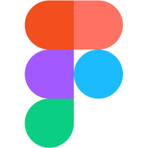
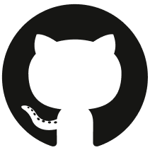
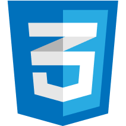
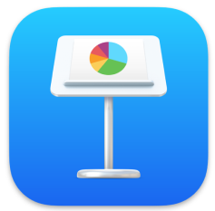
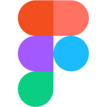
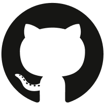
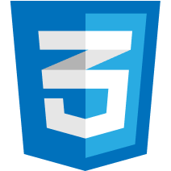
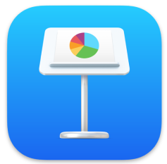
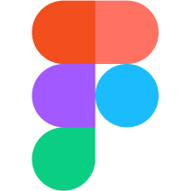
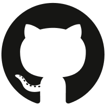
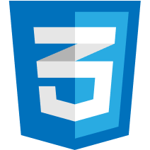
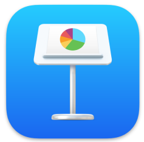
SKILLS
- Hard Skills
Copywriting | Graphic Design | Brand Identity | User Research | Wireframing and Prototyping | Accessibility | Design System | User Testing - Soft Skills
Empathetic | Creative | Curious | Flexible | Attention to details | Teamwork
EDUCATION
- 2022 - 07/2023
UX/UI Design - start2impact University - 10/2023
UX/UI Design - Fastweb Digital Academy - 2016 - 2019
Master’s Degree in Languages, economies, and institutions of Japan - Ca’ Foscari University of Venice